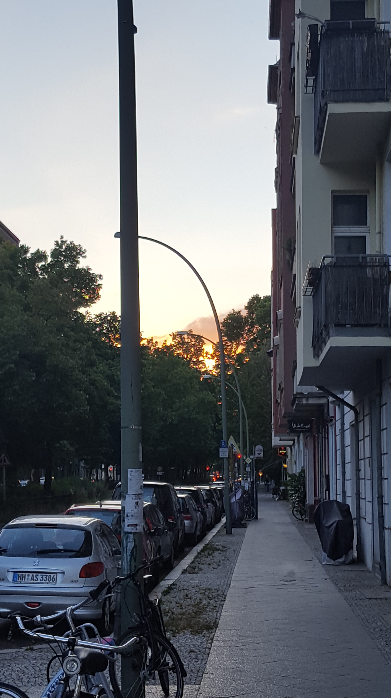

Personal reflection about Berlin
تؤرقني تلك المدينة التي طالما أدعيت أني أعرفها وأنها تعرفني. تؤرقني بأشباح من كنت أعرفهم ومن ظننت أني أعرفهم ومن تمنيت أن أعرفهم. تطوي منافذها ومداخلها واحدة تلو الأخرى، وأحاول أنا جاهدا أن أفسح لنفسي حيزا أو مكانا يمتد فيه جسدي وشتات أفكاري وتأبى برلين ويأبى قاطنيها ألا أن يثيروا ذلك المزيج من الوحشة والرفض. فتصبح برلين ذلك الفراغ الهائل، تلك المساحات الشاسعة من الشوارع، والميادين، والحدائق والغابات والجداول والأبنية القبيحة والجميلة، المأهولة والمهجورة، بدائل أو ربما خيارات للتواجد ولوهلة أظن أني حقا أستطيع "التواجد" في ذلك الفراغ وأني مثل آلاف آخرين جئت إلى هنا لمحاولة أن "أكون" دون الحاجة لجر كل هؤلاء الأشباح مرة بعد الأخرى. ولكن لم تعد برلين (الدنيا؟) كما نعرفها، ويصبح كل شيء وأي شيء ساحة ومدعاة للسجال والرفض والعنف أحيانا.
أدرك أن هذه هي لحظة الشتات والنفي، ورغم ثقل الكلمات، إلا أني أجد فيها ما يثير ما تبقى من الشغف والرغبة، ولكن أدرك أني غير مؤهل لتلك المحاولات اللانهائية لتعريف ذاتي في مقابل ذوات الآخرين أو التسامح مع هذا الكم الهائل من التعامي أو غياب الوعي.
أركب المترو بشكل يومي، تلاحقني تلك النظرات، من السوريين، الآسيويين، البيض، الأتراك، تتراوح بين استنكار أو الاستياء أو الاستخفاف والتهكم، وأدرك معناها وتثير مللي أكثر مما تثير حنقي، فلا أستطيع أن أتصور أن تواجد مثل تواجدي من الممكن أن يكون فعل مُحمّل بكل تلك الدلالات المثيرة للجدل.
أريد أن أنتقد كل هؤلاء، مهاجرين، مواطنين، لاجئين، وأن أنتقد السياسات التي اضطرتهم للرحيل والنفي والتي استغلت مأساتهم بشكل بارد وعملي، وأن أنتقد إسقاط كل هذ العنف على الآخرين، الأضعف، المهمشين كذلك وكأن اللاجئيين أو المواطنين البيض لا خيار أمامهم إلا التجبر على الملونين من النساء ومجتمع الميم.
لا يسعني ذلك الفراغ ولا "اندمج" في المدينة ولكن ولكن في بعض الأحيان، في تلك المرات القليلة حينما أهيم بين أشجار الغابة أتذكر أن التفكر ما هو إلا ذلك الشتات، تلك المحاولة لتواجد في لحظة ما، في مكان ما، ابتسم وللحظة لا تطاردني الأشباح ولا يزعجني الشتات ولكن نشوة استشفاف ذلك الوطن المحتمل